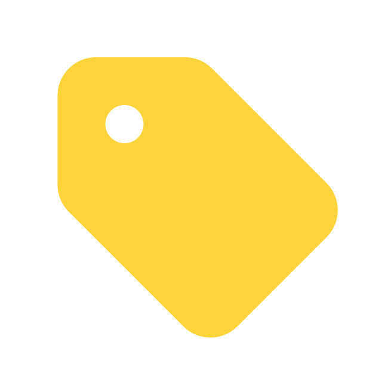

Bienvenue
Informaticienne de formation avec plus de 10 ans d’expérience : Gestion de projets, Étude Fonctionnelle, Conception & Développement, Support et Formation.
Postes occupés : Consultante fonctionnelle en solutions logicielles, Chargée de projets AMO, Chargée d'études PCMO, Ingénieur développement et support.

Domaines : Dématérialisation, Formation, Santé.
Vous trouverez ci-dessous des liens vers mes différents projets et réalisations.